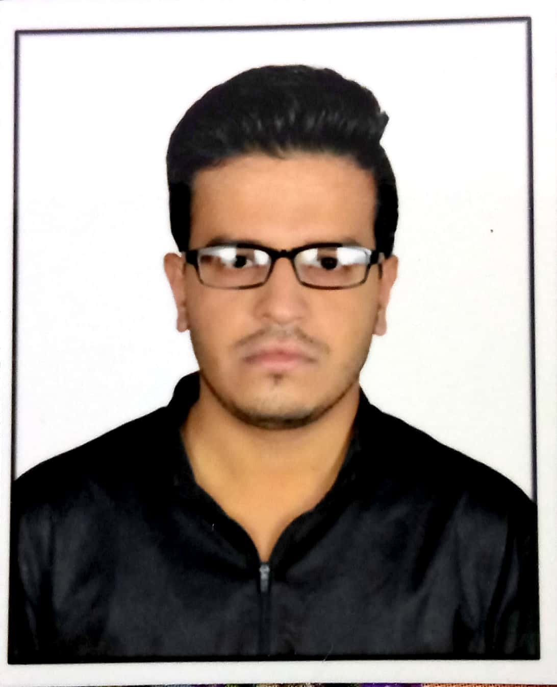

|

|
Jayant Kumar Kashiv
Cdac Student
Gwalior Madhya Pradesh
Mobile : +(91)-8109653551
Email : kashiv03jayant@gmail.com
|
Synopsis
An Engineering graduate in computer science stream,
currently pursuing cdac from Cdac Acts Delhi,
C, C++, Java with Oops, Operating System, Data Structure,
Git and web Technologies.
Personal Qualities
-
Enthusiastic, Energetic and Hardworking,
Adaptable to different environment and self motivated works
towards perfection can work independently and group as well.
Area of Expertise
- Software Development & Soluyion designing phase for Software Project
- Identify business core/critical system/processes and priorties
- Achieve Customer satisfaction by ensuring service qualities norms and building brand
image by exceeding customer expectations
- Business as well as technical knowledge in self
Technical Skills
|
Operating Systems:
|
Linux, Windows 10/11
|
|
RDBMS:
|
MySql, Oracle 11g, MS Access
|
|
Front End:
|
Html5, CSS3, Bootstraps, Javascript
|
|
Languages:
|
Java(Core + Advanced), ASP.Net, C#, C, C++
|
Academic Credentials
| Degree/certificates |
Institute/Universities |
Marks(%) |
| B.e in Computer Science |
ITM university Gwalior |
75 |